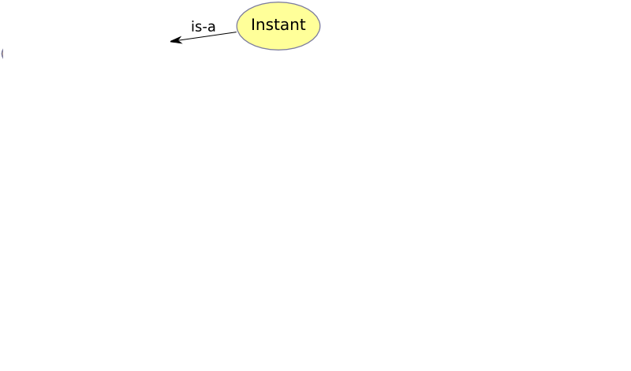
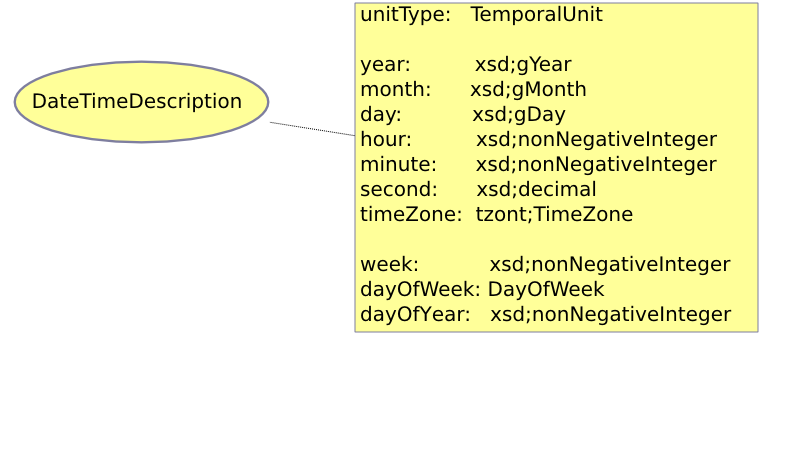

OWL-Time
- eine Ontologie für Zeit
Joscha Krutzki
Vorlesung: Netzbasierte Informationssysteme
FU-Berlin Institut für Informatik
Inhalt
- Einführung
- Zeitformate in XML Schema
- xsd:dateTime
- xsd:duration
- OWL-Time
- Was bringt OWL-Time?
- Literatur
Einführung
- Standard Ontologien für Zeit und Space grundlegend für Semantic Web
- z.B zum Modelieren Verhältnis von Zeitintervalen oder Zeitpunkten
- Bisher genutzt:
- DAML-Zeit von J.R.Hobs und Feng Pan, diverse andere Ontologien
- XML Schema primitive Datentypen, z.B. xsd:duration und xsd:dateTime
Test it
xsd:dateTime
- Beispiel: 2002-05-30T09:30:10-06:00
- Datum
- Trennzeichen T
- Uhrzeit, Sekunden auch als Float (z.B. 9:30:10.5)
- Zeitzone, ist offset zu UTC oder Z (=UTC Time)
- weglassen einzelner Teil möglich (z.B. ohne Zeitzone)
xsd:duration
- Beispiel: P10Y2M4DT10H3M30S
- Startzeichen P
- Anzahl Jahre
- Anzahl Monate
- Anzahl Tage
- Trennzeichen T
- Anzahl Stunden
- Anzahl Minuten
- Anzahl Sekunden, auch als Float möglich (Z.B. 2.333S)
- weglassen einzelner Teil möglich (z.B. P10Y = 10 Jahre)
- Negation möglich (z.B. -P10Y = -10 Jahre)
OWL-Time
- W3C Working Craft vom September 2006
http://www.w3.org/TR/owl-time - Standard Ontologie für Aussagen über Zeiteinheiten
- baut auf DAML-Zeit auf
- kompatibel zu vorhandenen Ontologien
- nutzt xsd:dateTime und xsd:duration
OWL-Time Grunkonzept


OWL-Time Beispiel
OWL-Time ProperInterval
OWL-Time DatetimeInterval
OWL-Time DatetimeDescription

Was bringt mir OWL-Time?
- Komplexe Aussagen über Zeit im Semantic Web
- Nutzen bei Programmieren:
- Standardkonzept zum Modelieren
- OWL-Time Reasoner für Abfragen
Literatur
- Grundlegende Publikationen über OWL-Time:
- Jerry R. Hobbs and Feng Pan. 2004. An Ontology of Time for the Semantic Web. ACM Transactions on Asian Language Processing (TALIP): Special issue on Temporal Information Processing, Vol. 3, No. 1, March 2004, pp. 66-85 http://www.isi.edu/~pan/time/pub/hobbs-pan-TALIP04.pdf
- Jerry R. Hobbs and Feng Pan (Herausgeber). 2006. Time Ontology in OWL. W3C Working Draft 27 September 2006
http://www.w3.org/TR/2006/WD-owl-time-20060927/
- Zur Bedeutung einer Zeitontologie für das Semantic Web:
- T. Berners-Lee, J. Hendler, O. Lassila. 2001. The Semantic Web. Scientific American, 2001, Mai
- J. van Ossenbruggen, L. Hardman und L. Rutledge. 2002. Hypermedia and the Semantic Web: A Research Agenda. Journal of Digital Information, volume 3, issue 1. Kapitel 4.3
Weiterführende Literatur
- Projektseiten der Autoren von OWL-Time
- OWL-Time Ontologie http://www.isi.edu/~pan/time
- timezone Ontologie http://www.isi.edu/~pan/timezonehomepage.html
- Subontologie time-entry und deren Nutzung in OWL-S (Webservice Ontologie):
- Feng Pan and Jerry R. Hobbs. 2004. Time in OWL-S. In Proceedings of the AAAI Spring Symposium on Semantic Web Services, Stanford University, CA, pp. 29-36, 2004.
http://www.isi.edu/~pan/time/pub/pan-hobbs-AAAI-SSS04.pdf
- Feng Pan and Jerry R. Hobbs. 2004. Time in OWL-S. In Proceedings of the AAAI Spring Symposium on Semantic Web Services, Stanford University, CA, pp. 29-36, 2004.
- Modelierung icalendar und Aggregation (z.B: jeden 3. Sonntag):
- Feng Pan. 2005. A Temporal Aggregates Ontology in OWL for the Semantic Web. In Proceedings of the AAAI Fall Symposium on Agents and the Semantic Web, Arlington, Virginia
http://www.isi.edu/~pan/time/pub/pan-AAAI-FSS05.pdf
- Feng Pan. 2005. A Temporal Aggregates Ontology in OWL for the Semantic Web. In Proceedings of the AAAI Fall Symposium on Agents and the Semantic Web, Arlington, Virginia